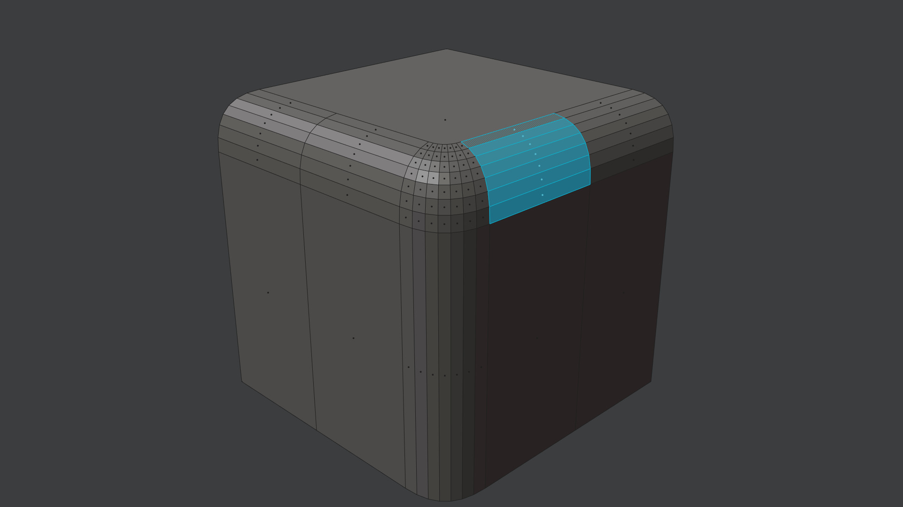

Unbevel
shortcut QWERTY xb, QWERTZ yb
Unbevel is a quick way, to Unfuse and Unchhamfer right after.
It turns a Fuse/Bevel/Bridge surface into a hard edge.
Selection
Selectiton requirements are the same as for the Unfuse tool:
Poly strip - a row of polygons - across the Fuse/Bevel/Bridge surface.
The best way to select this is by using the Pick Shortest Path tool via Ctrl + Select Mouse.
If there are Ngons on both sides, you can be even faster by loop selecting via Alt + Select Mouse, while pointing at a rail edge of the Fuse/Bevel/Bridge surface.
 poly strip across fuse/bevel/bridge surface
Note
Unbevel will automatically expand the selection to the entire Fuse/Bevel/Bridge surface.
If it runs into triangles or ngons, it will abort.
See Quad Corner for how to deal with triangular Bevel corners.
Keep in mind
You currently can not select the entire bevel surface on your own to unbevel, it has to be a poly strip going across.